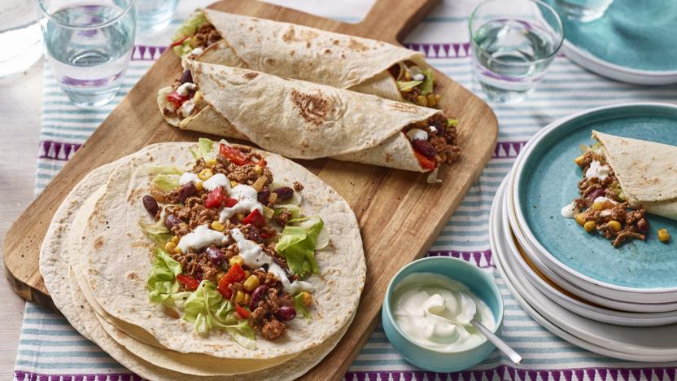

Tacos

Serve this dish in the middle of the table, sharing-style, so everyone can build thier own tacos. You can swap the soft tortillas for crispy taco shells if you like, but they will cost a few pence more.
This recipe is part of a budget meal plan for six. In September 2022, this recipe was costed at an average of £6.15 when checking prices at four UK supermarkets. It is designed to be made in conjunction with a low-cost store-cupboard.
Ingredients
- 400–500g/14oz–1lb 2oz beef mince
- 1 medium onion, finely chopped
- 1 large pepper, any colour, deseeded and cut into roughly 15mm/⅝in chunks
- 2 tbsp fajita seasoning from a packet
- 400g tin red kidney beans in water, undrained
- 150g/5½oz frozen sweetcorn
- 2 tbsp tomato ketchup
- 8 soft tortilla wraps
- 1 small iceberg lettuce, shredded
- 200ml/7fl oz soured cream
- ground black pepper, to taste
Method
- Put the beef, onion and pepper in a wide-based saucepan, large deep frying pan or sauté pan and fry for 5 minutes over a medium-high heat, stirring and squishing the beef to break up the mince. (There is no need to add oil unless your mince is extra lean.)
- Sprinkle over the spices, season with lots of ground black pepper and cook for a minute more, stirring. Add the beans (including the liquid from the tin), sweetcorn and ketchup. Cook together for 3–4 minutes or until hot, stirring regularly.
- To serve, heat the tortillas according to the pack instructions (a microwave works well for this). Add lettuce to the warm tortilla wraps, top with mince and some soured cream and roll up to eat.